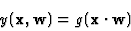
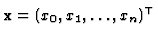
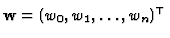

The base element of a neural network model, a Formal Neuron [6], computes
 |
(7) |
the inner product of its input vector

and its synaptic weight vector
which then goes through activation function g to yield neuron's output y. The input x0=1, and the corresponding synaptic weight w0 is called the threshold of the neuron. As activation function g, either Heaviside (step) function or a sigmoid function is commonly used.A Neural Network Model [7] is an interconnection of neurons. IFSs describe recurrent models. To be more precise, they describe binary recurrent asymmetric neural networks.